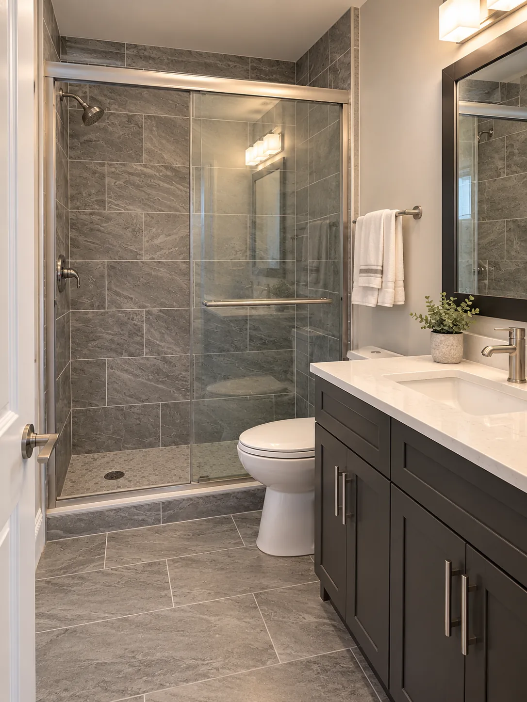
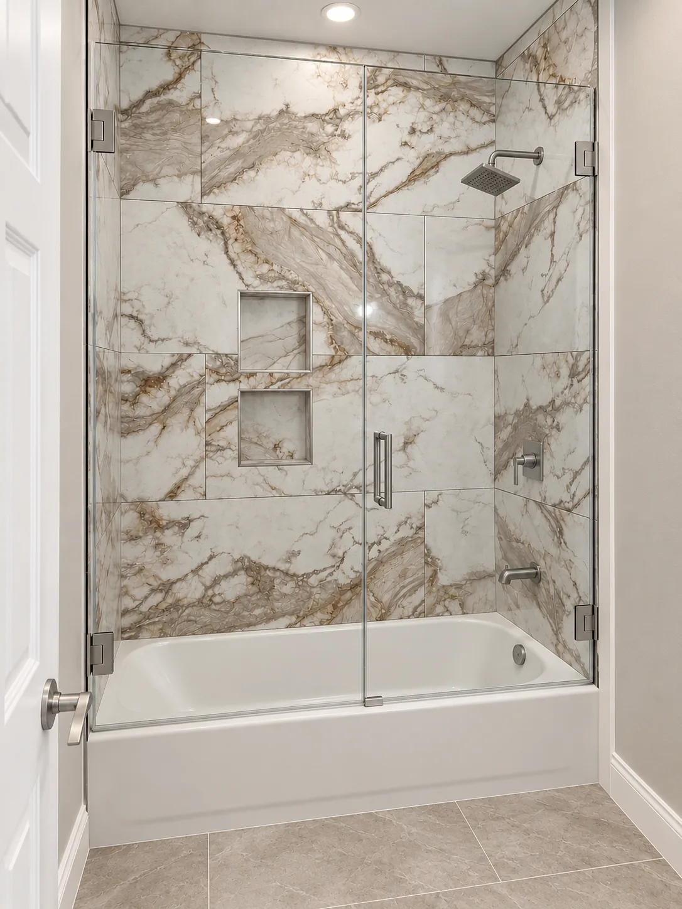
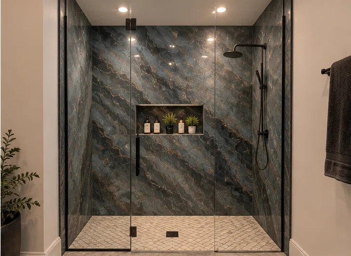
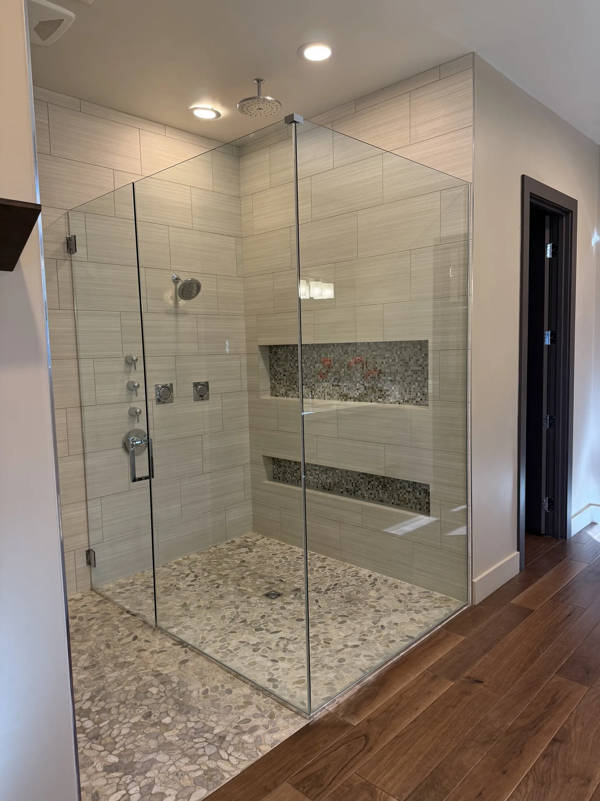
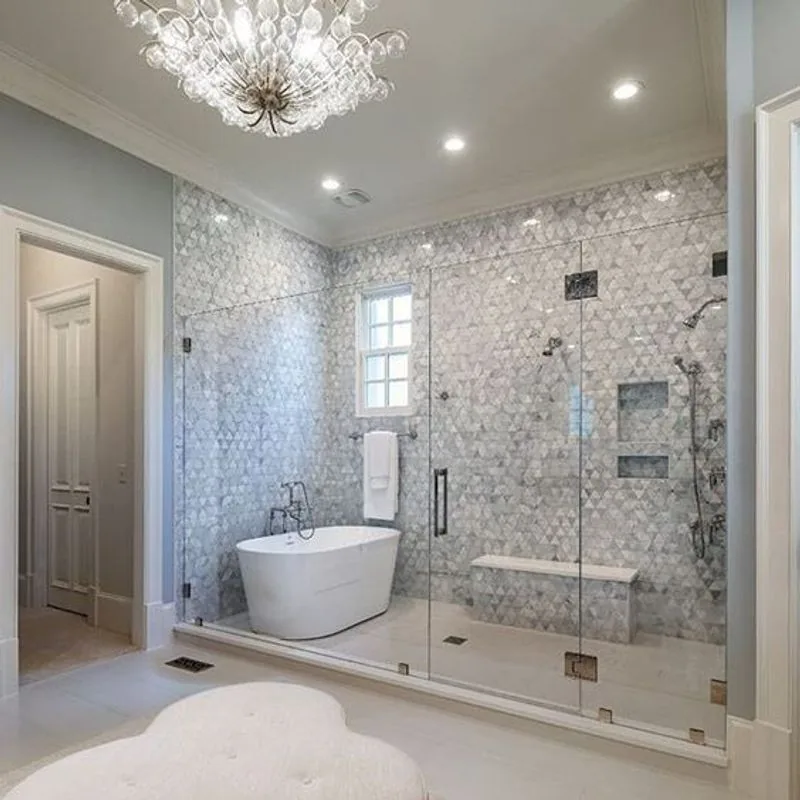

Bathroom renovations, showers, tub surrounds and tile details, all in one collection.
Gray bathroom and walk-in shower
*Before: visual reconstruction / enhanced reference. Supplied before views may include AI recreation and are not verified documentary originals. After: completed work, lightly enhanced.
A glass-enclosed shower, gray tile and a dark vanity.
Navy and marble bathroom
*Before: visual reconstruction / enhanced reference. Supplied before views may include AI recreation and are not verified documentary originals. After: completed work, lightly enhanced.
Navy cabinetry and marble-pattern finishes bring a fresh look to this bathroom.
Gray-tiled spa bathroom

A tiled shower and vanity with coordinated finishes.
Completed work · supplied, lightly enhanced image.
Marble-pattern bath surround

Tile detail around a bathtub and shower.
Completed work · supplied, lightly enhanced image.
Dark tile shower renovation
*Before: visual reconstruction / enhanced reference. Supplied before views may include AI recreation and are not verified documentary originals. After: completed work, lightly enhanced.
Dark shower tile paired with a light floor and vanity surface.
Epoxy shower

Dark wall surfaces and a light shower floor.
Completed work · supplied, lightly enhanced image.
Glass-enclosed tile shower

Horizontal tile, mosaic niches and a pebble-style floor.
Completed work · supplied, lightly enhanced image.
Mosaic shower and soaking tub

A glass enclosure, mosaic tile and freestanding tub.
Completed work · supplied, lightly enhanced image.